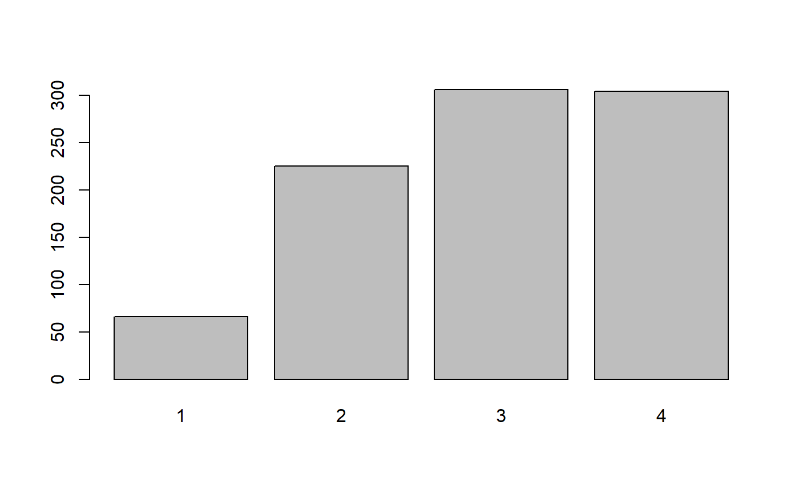
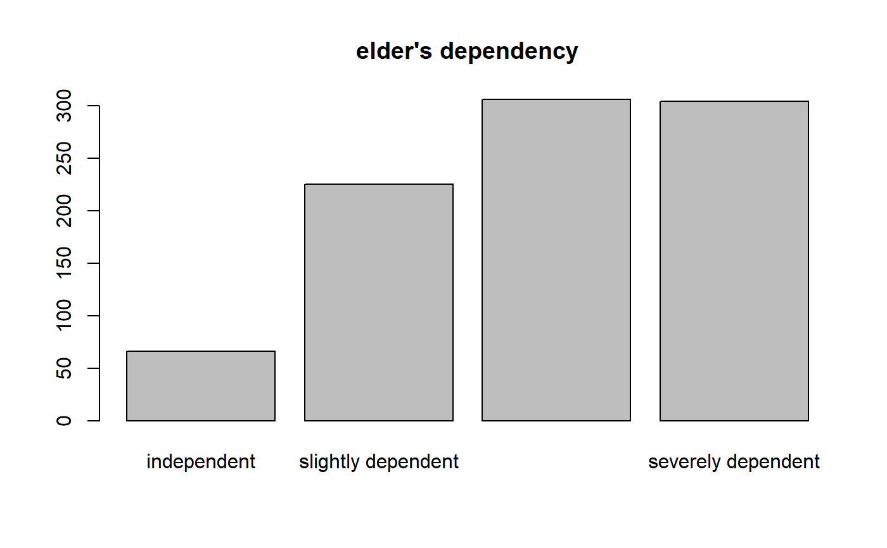

This function returns the value labels of labelled data.
get_labels(x, attr.only = FALSE, include.values = NULL, include.non.labelled = FALSE, drop.na = TRUE, drop.unused = FALSE)
| x | A data frame with variables that have value label attributes (e.g.
from an imported SPSS, SAS or STATA data set, via |
|---|---|
| attr.only | Logical, if |
| include.values | String, indicating whether the values associated with the
value labels are returned as well. If |
| include.non.labelled | Logical, if |
| drop.na | Logical, whether labels of tagged NA values (see |
| drop.unused | Logical, if |
Either a list with all value labels from all variables if x
is a data.frame or list; a string with the value
labels, if x is a variable;
or NULL if no value label attribute was found.
See vignette Labelled Data and the sjlabelled-Package
for more details; set_labels to manually set value
labels, get_label to get variable labels and
get_values to retrieve the values associated
with value labels.
# import SPSS data set # mydat <- read_spss("my_spss_data.sav") # retrieve variable labels # mydat.var <- get_label(mydat) # retrieve value labels # mydat.val <- get_labels(mydat) data(efc) get_labels(efc$e42dep)#> [1] "independent" "slightly dependent" "moderately dependent" #> [4] "severely dependent"# simple barplot barplot(table(efc$e42dep))# get value labels to annotate barplot barplot(table(efc$e42dep), names.arg = get_labels(efc$e42dep), main = get_label(efc$e42dep))# include associated values get_labels(efc$e42dep, include.values = "as.name")#> 1 2 3 #> "independent" "slightly dependent" "moderately dependent" #> 4 #> "severely dependent"# include associated values get_labels(efc$e42dep, include.values = "as.prefix")#> [1] "[1] independent" "[2] slightly dependent" #> [3] "[3] moderately dependent" "[4] severely dependent"# get labels from multiple variables get_labels(list(efc$e42dep, efc$e16sex, efc$e15relat))#> [[1]] #> [1] "independent" "slightly dependent" "moderately dependent" #> [4] "severely dependent" #> #> [[2]] #> [1] "male" "female" #> #> [[3]] #> [1] "spouse/partner" "child" #> [3] "sibling" "daughter or son -in-law" #> [5] "ancle/aunt" "nephew/niece" #> [7] "cousin" "other, specify" #># create a dummy factor f1 <- factor(c("hi", "low", "mid")) # search for label attributes only get_labels(f1, attr.only = TRUE)#> NULL# search for factor levels as well get_labels(f1)#> [1] "hi" "low" "mid"# same for character vectors c1 <- c("higher", "lower", "mid") # search for label attributes only get_labels(c1, attr.only = TRUE)#> NULL# search for string values as well get_labels(c1)#> [1] "higher" "lower" "mid"# create vector x <- c(1, 2, 3, 2, 4, NA) # add less labels than values x <- set_labels(x, labels = c("yes", "maybe", "no"), force.values = FALSE)#># get labels for labelled values only get_labels(x)#> [1] "yes" "maybe" "no"# get labels for all values get_labels(x, include.non.labelled = TRUE)#> [1] "yes" "maybe" "no" "4"# get labels, including tagged NA values library(haven) x <- labelled(c(1:3, tagged_na("a", "c", "z"), 4:1), c("Agreement" = 1, "Disagreement" = 4, "First" = tagged_na("c"), "Refused" = tagged_na("a"), "Not home" = tagged_na("z"))) # get current NA values x#> <Labelled double> #> [1] 1 2 3 NA(a) NA(c) NA(z) 4 3 2 1 #> #> Labels: #> value label #> 1 Agreement #> 4 Disagreement #> NA(c) First #> NA(a) Refused #> NA(z) Not homeget_labels(x, include.values = "n", drop.na = FALSE)#> 1 4 NA(c) NA(a) NA(z) #> "Agreement" "Disagreement" "First" "Refused" "Not home"# create vector with unused labels data(efc) efc$e42dep <- set_labels( efc$e42dep, labels = c("independent" = 1, "dependent" = 4, "not used" = 5) ) get_labels(efc$e42dep)#> [1] "independent" "dependent" "not used"get_labels(efc$e42dep, drop.unused = TRUE)#> [1] "independent" "dependent"get_labels(efc$e42dep, include.non.labelled = TRUE, drop.unused = TRUE)#> [1] "independent" "2" "3" "dependent"